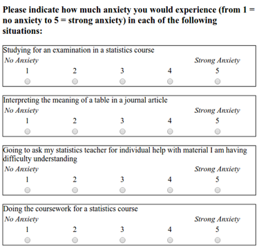

download.file("https://github.com/lu-psy-r/statistics_for_psychologists/blob/main/PSYC122/data/week13/stars2.csv?raw=true", destfile = "stars2.csv")3. Week 13 - The Linear Model
Written by Margriet Groen (partly adapted from materials developed by the PsyTeachR team at the University of Glasgow)
This week we will focus on the linear model and simple linear regression.
Lectures
The lecture material for this week is presented in two parts:
- Theory – The linear model (~25 min) Watch this part before you complete the reading and the pre-lab activities. The video has captions, in case you find that helpful. You can download the slides and a transcript from the links below the video.
- How to – How to build a linear model in R(~14 minutes) Watch this part after you’ve completed the reading and before you attend the lab session. You can download the slides, a transcript and the example scritps from the links below the video.
Reading
The reading that accompanies the lectures this week is from chapter 10 of the core text by Howell (2017).
Pre-lab activities
After having watched the lectures and read the textbook chapter you’ll be in a good position to try these activities. Completing them before you attend your lab session will help you to consolidate your learning and help move through the lab activities more smoothly.
Pre-lab activity 1: Visualising the regression line
Have a look at this visualisation of the regression line by Ryan Safner.
In this shiny app, you see a randomly-generated set of data points (within specific parameters, to keep the graph scaled properly). You can choose a slope and intercept for the regression line by using the sliders. The graph also displays the residuals as dashed red lines. Moving the slope or the intercept too much causes the generated line to create much larger residuals. The shiny app also calculates the sum of squared errors (SSE) and the standard error of the regression (SER), which calculates the average size of the error (the red numbers). These numbers reflect how well the regression line fits the data, but you don’t need to worry about those for now.
In the app he uses the equation Y = aX + b in which b is the intercept and a is the slope.
This is slightly different from the equation you saw during the lecture. There we talked about Y = b0 + b1*X + e. Same equation, just different letters. So b0 in the lecture is equivalent to b in the app and b1 in the lecture is equivalent to a in the app.
Pre-lab activity questions:
- Change the slider for the intercept. How does it change the regression line?
- Change the slider for the slope. How does it change the regression line?
- What happens to the residuals (the red dashed lines) when you change the slope and the intercept of the regression line?
Pre-lab activity 2: Data visualisation - practice with ggplot2()
We’ve mostly been using the ggplot2 package for visualising data. You can read a great overview of the ggplot2 package here. It also links to a ‘cheatsheet’ that you can download as a .pdf document. Lots of useful info on there!
With regard to visualising relations between continuous variables, the geom_point() function in combination with the geom_line() function is important. Also remember that it is always a good idea to make sure you’ve given you axes informative labels (using the labs() function). You’ve used these functions before, but the following ‘recipes’ summarise what each one does and how to use it.
TASK Have a look at each ‘recipe’ and read through it. Try to understand each step.
Recipes - how to use them
Each ‘recipe’ has the same structure.
- First, it summarises what it is that you want to achieve when using that specific function. In the case of
select()it says “You want to extract specific columns from a data frame and return them as a new, smaller data frame.” - Then, it outlines a number of steps that you need to carry out when using this function. For
select()it outlines 2 steps: 1. Pass the dataframe to the function. 2. List the column(s) to return. - Finally, there is an example talks you through using the function with some data. For
select()it uses an example with data on the weather. - Additional information appears in extra boxes with a light-bulb icon. If you find those confusing, don’t worry about them at this stage.
geom_point()- create a scatterplot - recipegeom_line()- add a regression line - there is no recipe, but have a look at theggplot2()cheatsheet mentioned earlierlabs()- change the axes labels - recipe
Pre-lab activity 3: Getting ready for the lab class
Get your files ready
Download the 122_week13_forStudents.zip file and upload it into the new folder in RStudio Server you created (see last week’s Pre-lab activity 4 for instructions on how to do that.
If you have difficulty uploading files to the server
If you get error messages when attempting to upload a file or a folder with files to the server, you can try the following steps:
- Close the R Studio server, close your browser and start afresh.
- Open the R Studio server in a different browser.
- Follow a work around where you use code to directly download the file to the server. The code to do that will be available at the start of the lab activity where you need that particular file. The code to download the file you need to complete the quiz is below.
Lab activities
In this lab, you’ll gain understanding of and practice with:
- conducting simple regression in R
- interpreting simple regression in R
- reporting the results in APA format
- when and why to apply simple regression to answer questions in psychological science
Lab activity 1: The regression line
Question 1
What is the regression equation as discussed during the lecture and what does each letter represent?
Question 2
What are residuals?
Question 3
Discuss the answers to the pre-lab activity questions. What did you find?
Change the slider for the intercept. How does it change the regression line? The value for y at x = 0 changes.
Change the slider for the slope. How does it change the regression line? The steepness of the line changes.
What happens to the residuals (the red dashed lines) when you change the slope and the intercept of the regression line? The distance between the fitted values (the line) and the observed values (the dots) increases. Therefore, the red dashed lines become longer suggesting that the residuals increase. The model therefore fits the data less well.
Lab activity 2: Statistics anxiety and engagement in module activities
In this lab, we’ll be working with real data and using regression to explore the question of whether there is a relationship between statistics anxiety and engagement in course activities.
Background
The hypothesis is that students who are more anxious about statistics are less likely to engage in course-related activities. This avoidance behaviour could ultimately be responsible for lower performance for these students (although we won’t be examining the assessment scores in this activity).
We are going to analyse data from the STARS Statistics Anxiety Survey, which was administered to students in the third-year statistics course in Psychology at the University of Glasgow. All the responses have been anonymised by associating the responses for each student with an arbitrary ID number (integer).
The STARS survey (Cruise, Cash, & Bolton, 1985) is a 51-item questionnaire, with each response on a 1 to 5 scale, with higher numbers indicating greater anxiety.
Cruise, R. J., Cash, R. W., & Bolton, D. L. (1985). Development and validation of an instrument to measure statistical anxiety. Proceedings of the American Statistical Association, Section on Statistical Education, Las Vegas, NV.
Example items from the STARS survey

As a measure of engagement in the course, we will use data from Moodle usage analytics. Over the course of the term, there were eight optional weekly on-line sessions that students could attend for extra support. The variable n_weeks in the psess.csv file tells you how many (out of eight) a given student attended.
Our hypothesis is that greater anxiety would be reflected in lower engagement. Answer the following question.
Question 1a: If our hypothesis is correct, what type of correlation (if any) should we observe between students’ mean anxiety levels and the variable
n_weeks?
Before we begin
Let’s put the basics in place:
- Make sure you have started a new R Markdown script. If you need a reminder of how to do that, please revisit week 6 of PSYC121 (here).
- You’ll need the data files
stars2.csvandpsess.csvyou downloaded when completing Pre-lab activity 3. If you experienced issues with uploading files to the server, follow the instructions below. - When starting a new analysis, it is a good idea to empty the R environment. This prevents objects and variables from previous analyses interfering with the current one.
- Finally, make sure your working directory is set to the folder in which you have stored the data files (
stars2.csvandpsess.csv).
If you couldn’t upload files to the server, do this:
If you experienced difficulties with uploading a folder or a file to the server, you can use the code below to directly download the file you need in this lab activity to the server (instead of first downloading it to you computer and then uploading it to the server). Remember that you can copy the code to your clipboard by clicking on the ‘clipboard’ in the top right corner.
download.file("https://github.com/lu-psy-r/statistics_for_psychologists/blob/main/PSYC122/data/week13/psess.csv?raw=true", destfile = "psess.csv")
Cleaning the R environment
You can clean the R environment by clicking on the broom icon at the top right of the environment window, or you can use the code below.
rm(list=ls())
Checking your working directory
Use the code below to check what you working directory is currently set to. This is the folder that R will use to look for files. Is the file path that is written to the Console after you run the code snippet the one that contains the data file? You can check by nativating to the path you can see in the Console in the ‘Files’ pane on the right. Does it contain the data files?
getwd()If your working directory is not set to the folder that contains the data file, navigate to folder that contains the data file in the ‘Files’ pane, click ‘More’ and then on ‘Set as working directory’.
Step 1. Add the code to load the relevant libraries in a new code chunk. We need the following ones:
broom,carandtidyverse. If you are unsure, you can look at the ‘Hint’ below for a clue by expanding it. After that, if you are still unsure, you can view the code by expanding the ‘Code’ section below.
Hint
Use the library()function. Remember to put it inside a ‘code chunk’ in your R Markdown script.
Code
The code to do this is below.
library(broom)
library(car)
library(tidyverse)Step 2. Read in both files, have a look at the layout of the data and familiarise yourself with it. I assign the data from the STARS survey to an object called ‘stars’ and the data on engagement (from the psess.csv file) ‘engage’. You can of course choose to use object names that make sense to you.
Hint
Use the read_csv()function to read in the data and the head() function to have a quick look at each data frame.
Code
The code to do this is below.
stars <- read_csv("stars2.csv")
engage <- read_csv("psess.csv")
head(stars) # Look at the data frames
head(engage)Question 2a: In the
starsdata frame, what do the numbers in the first row across the three columns refer to?
Step 3. Getting the data ready. Now that we’ve read in both data files, the next step is to calculate the mean anxiety scores for each participant. At the moment we have scores on all questions separately for each participant in the
starstable. Instead we need one mean anxiety score for each participant. Write the code to calculate mean anxiety scores.
Hint
Remember that participant is identified by the ID variable. Use group_by() and summarise(). Store the resulting table in a variable named stars_mean. Also, remember to use na.rm = TRUE when calculating the mean scores to deal with participants who have missing data (NAs).
Code
The code to do this is below:
stars_means <- stars %>%
group_by(ID) %>%
summarise(mean_anxiety = mean(Score, na.rm = TRUE))Question 3a: What is the mean anxiety score for participant 3?
Ok, before we get ahead of ourselves, in order to perform the regression analysis we need to combine the data from stars (the mean anxiety scores) with the data from engage (n_weeks).
TASK: Join the two tables, call the resulting table
joined.
Hint
Use the inner_join() function (making use of the variable that is common across both tables) to join.
Code
The code to do this is below:
joined <- inner_join(stars_means, engage, "ID")Step 4. We now need descriptive statistics for both variables. Calculate the mean and standard deviations for the anxiety scores and the engagement data.
Hint
Use the summarise() function, in combination with the mean() and sd() functions to do this. Remember to use na.rm = TRUE when calculating the mean scores to deal with participants who have missing data (NAs).
Code
The code to do this is below:
descriptives <- joined %>%
summarise(mean_anx = mean(mean_anxiety, na.rm = TRUE),
sd_anx = sd(mean_anxiety, na.rm = TRUE),
mean_weeks = mean(n_weeks, na.rm = TRUE),
sd_weeks = sd(n_weeks, na.rm = TRUE))Question 4a: What are the means and standard deviation for anxiety and engagement with the statistics module?
Step 5. Visualise the data. As always, it is a good idea to visualise your data. Now that we have all the variables in one place, make a scatterplot of anxiety as a function of engagement.
Hint
For this you’ll need the ggplot() function together withgeom_point()andgeom_smooth(). Make sure to give your axes some sensible labels with thelabs()` function.
Code
The code to do this is below:
ggplot(joined, aes(x = mean_anxiety, y = n_weeks)) +
geom_point() +
geom_smooth(method = "lm") +
labs(x = "Anxiety", y = "Engagement") +
theme_bw()Question 5a: What does the scatterplot suggest about the relationship between anxiety and engagement?
Step 6. With all the variables in place, we’re ready now to start building the regression model. Use the
lm()function to run the regression model in which you model engagement (the outcome variable) as a function of anxiety (the predictor variable) and use thesummary()function to look at the output.
Hint
Use the template below. Replace the ‘outcome’, ‘predictor’ and ‘my_data’ parts with the relevant info.
mod <-lm(outcome ~ predictor, data = my_data)
mod_summary <- summary(mod)
mod_summary
Code
The code to do this is below:
mod <- lm(n_weeks ~ mean_anxiety, data = joined)
mod_summary <- summary(mod)
mod_summaryQuestion 6a: What is the estimate of the y-intercept for the model, rounded to three decimal places?
Question 6b: To three decimal places, if the General Linear Model for this model is
Y=beta0 + beta1X + e, then the value ofbeta1is …
Question 6c: To three decimal places, for each unit increase in anxiety, engagement decreases by …
Question 6d: To two decimal places, what is the overall F-value of the model?
Question 6e: Is the overall model significant?
Question 6f: What proportion of the variance does the model explain?
Step 7. Now that we’ve fitted a model, let’s check whether the model meets the assumptions of linearity, normality and homoscedasticity. Write the code to create the plots that allow you to check the assumptions.
Hint
crPlots() to check linearity, qqPlot() to check normality of the residuals, and residualPlot() to check homoscedasticity of the residuals.
Code
The code to do this is below
crPlots(mod) # Plot linear line and line that best fits the data to check the relationship between outcome and predictor is linear
qqPlot(mod$residuals) # Create qq-plot to check residuals are normally distributed
residualPlot(mod) # Create residual plot to check residual show homoscedasticityQuestion 7a: Does the relationship appear to be linear?
Question 7b: Do the residuals show normality?
Question 7c: Do the residuals show homoscedasticity?
Step 8. Finally, it’s time to write up the results following APA guidelines. What would the results section look like if you wrote them up, following APA guidelines?
Hint
The Purdue writing lab website is helpful for guidance on punctuating statistics.
Answers
When you have completed all of the lab content, you may want to check your answers with our completed version of the script for this week. Remember, looking at this script (studying/revising it) does not replace the process of working through the lab activities, trying them out for yourself, getting stuck, asking questions, finding solutions, adding your own comments, etc. Actively engaging with the material is the way to learn these analysis skills, not by looking at someone else’s completed code…
Lab activity 1
- What is the regression equation as discussed during the lecture and what does each letter represent?
- What are residuals?
- Discuss the answers to the pre-lab activity questions. What did you find?
Lab activity 2
You can download the R Markdown-script that contains the code to complete lab activity 2 here: 122_wk13_labAct2.Rmd.
1a. If our hypothesis is correct, what type of correlation (if any) should we observe between students’ mean anxiety levels and the variable n_weeks?
2a. In the stars table, what do the numbers in the first row across the three columns refer to?
3a. What is the mean anxiety score for participant 3?
4a. What are the means and standard deviation for anxiety and engagement with the statistics module?
5a. What does the scatterplot suggest about the relationship between anxiety and engagement?
6a. What is the estimate of the y-intercept for the model, rounded to three decimal places?
6b. To three decimal places, if the General Linear Model for this model is Y=beta0 + beta1X + e, then the value of beta1 is …
6c. To three decimal places, for each unit increase in anxiety, engagement decreases by …
6d. To two decimal places, what is the overall F-ratio of the model?
6e. Is the overall model significant?
6f. What proportion of the variance does the model explain?
7a. Does the relationship appear to be linear?
7b. Do the residuals show normality?
7c. Do the residuals show homoscedasticity?
- What would the results section look like if you wrote them up, following APA guidelines?
Online Q&A
Below is the recording of this week’s online Q&A.